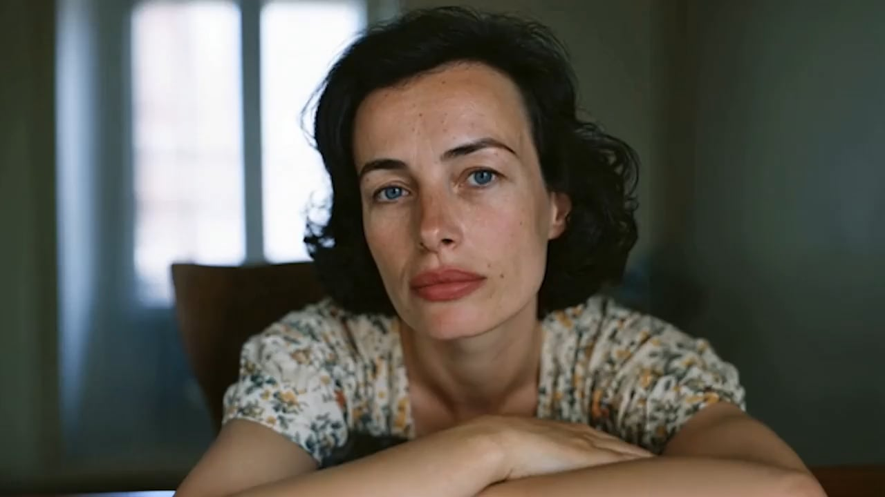
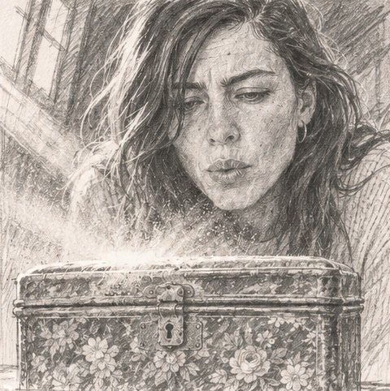

← Tous les films Avant l’oubli Bande-annonce · Fiction16:9  Lire Voir sur Vimeo Revenir à l’affiche L’attente devant le carVisage et costume, graphite généré d’après l’image au village. Le souffle sur le coffretGeste et lumière, graphite généré d’après l’image du grenier. Le coffret fleuriGeste et lumière Une bande-annonce qui s’appuie sur les visages, les regards et les atmosphères pour installer un univers de fiction.Dossier d’images